| How the landscape is drawn and scrolled |
Cyberun never scrolls the screen. Every pass of the game, the landscape of the up to four map cells the view straddles is drawn again straight onto the screen, from tile records -- each a short list of straight runs of identical steps -- by POP blitters, with graphics shifted at start-up for 0, 2, 4 and 6 pixels. Nothing is ever cleared: black sky and the ground's checker look the same after a 2-pixel move, so only the thin strips a moving edge uncovers are painted. This page takes that apart, then follows a real pass through it in the simulator.
The world is a ring of 96 by 28 map cells, each a page exactly the size of the play area: 224 pixels across (x 8 to $E7) and 160 lines down (lines $18 to $B7). landscape_map holds a tile number for each, a row after another; map_cell_address finds a cell's byte and wraps the column, and read_map_cell gives tile 0 for row 0, the sky, which is not stored. Map rows 0-2 hold no landscape at all.
The view straddles at most four cells: its own (the upper left), the one below, the one to the right and the one below that. Whenever it crosses into a new cell, load_map_window rebuilds the window: the four tile records' addresses in map_window_tiles, their tile numbers in map_window_tile_bytes (which the collision, spawning and beam code read too), and the cells' collision-box lists (loader_entry, ground_cell_bottom_left, ground_cell_top_right, ground_cell_bottom_right; see collision with the landscape). A position on the screen is a position in a page plus origin_x and origin_y: x + origin_x for the left cells and $E0 more for the right ones (an 8-bit sum), y + origin_y for the lower cells and $A0 less for the upper.
The scene on this page was flown to by keys from the start of a game: right along the plain, up over the first thing standing on it, and on over the drop to the east, to map column $10, row $07. Its window, read from the game's memory, with origin_x $BE and origin_y $8A; the blue lines are the cells' edges on the screen (x 166, line 162):
| Cell | Map column | Map row | Tile | Record | Markers | Pieces |
|---|---|---|---|---|---|---|
| the view's cell | $10 | $07 | $37 | $6ED3 | mirrored | 2 |
| the cell below | $10 | $08 | $36 | $6ECD | mirrored | 1 |
| the cell to the right | $11 | $07 | $00 | tile_records | none | 0 |
| the cell below and right | $11 | $08 | $33 | $6E9B | mirrored | 2 |
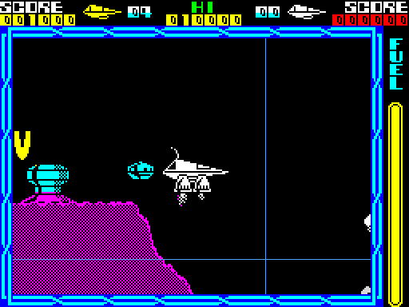
The terrace scene, with the edges between its four map cells in blue.
tile_table holds 171 words, tile n's record at word n; the records are in tile_records. A record is a count of pieces and, for each piece, its start in the page (x, and y counting down from the page's top: the piece's lowest point), a byte whose high nibble is the direction and low nibble the number of steps (0 meaning 16), and for a flat piece two end codes. Before the count there may be markers: $99 turns the tile upside down (floors become ceilings), $FF mirrors it left to right, and a byte from $95 up is skipped. That rule lets four tiles share one record -- the plain one at A, upside down at A-1 ($99), mirrored at A-2 ($FF, then the $99 skipped), and both at A-3. Decoded here the way draw_landscape reads them, 4 of the 171 tiles are empty (sky, rock and the inside of a hill are all an empty tile), 46 are upside down and 70 mirrored, and no tile has more than 6 pieces -- the seven boxes a cell's collision list holds.
Each of the 16 directions has a step shape, from piece_shapes by set_piece_shape -- a run across in pixels and in screen bytes and a rise in rows -- and a blitter and a graphic for each fine-scroll position, from four tables of 16 four-byte entries (piece_blitters_shift0, piece_blitters_shift2, piece_blitters_shift4, piece_blitters_shift6). Directions 7 to 13 use the shape seven lower and set piece_ceiling, and the walls the last two shapes; piece_classes gives the class the collision code reads. Read from the game:
| Direction | What | Run (pixels) | Run (bytes) | Rise | Class | Blitter at shift 0 | 2 | 4 | 6 |
|---|---|---|---|---|---|---|---|---|---|
| 0 | flat floor | 24 | 3 | 0 | $04 | blit_flat_step | blit_flat_step | blit_flat_step | blit_flat_step |
| 1 | gentle slope, climbing right | 16 | 2 | 8 | $01 | blit_two | $E4A8 | $E4A8 | $E4A8 |
| 2 | 45 degrees, climbing right | 8 | 1 | 8 | $02 | blit_one | $E4D0 | $E4D0 | $E4D0 |
| 3 | steep, climbing right | 8 | 1 | 16 | $03 | blit_one | $E4D0 | $E4D0 | $E4D0 |
| 4 | gentle slope, climbing left | -16 | -2 | 8 | $41 | $E52B | $E4F2 | $E4F2 | $E4F2 |
| 5 | 45 degrees, climbing left | -8 | -1 | 8 | $42 | blit_mirror_one | blit_mirror_two | blit_mirror_two | blit_mirror_two |
| 6 | steep, climbing left | -8 | -1 | 16 | $43 | blit_mirror_one | blit_mirror_two | blit_mirror_two | blit_mirror_two |
| 7 | flat ceiling | 24 | 3 | 0 | $08 | blit_flat_step | blit_flat_step | blit_flat_step | blit_flat_step |
| 8 | gentle ceiling, climbing right | 16 | 2 | 8 | $81 | blit_two | $E4A8 | $E4A8 | $E4A8 |
| 9 | 45-degree ceiling, climbing right | 8 | 1 | 8 | $82 | blit_one | $E4D0 | $E4D0 | $E4D0 |
| 10 | steep ceiling, climbing right | 8 | 1 | 16 | $83 | blit_one | $E4D0 | $E4D0 | $E4D0 |
| 11 | gentle ceiling, climbing left | -16 | -2 | 8 | $C1 | $E52B | $E4F2 | $E4F2 | $E4F2 |
| 12 | 45-degree ceiling, climbing left | -8 | -1 | 8 | $C2 | blit_mirror_one | blit_mirror_two | blit_mirror_two | blit_mirror_two |
| 13 | steep ceiling, climbing left | -8 | -1 | 16 | $C3 | blit_mirror_one | blit_mirror_two | blit_mirror_two | blit_mirror_two |
| 14 | wall, stepping right | 0 | 1 | 16 | $10 | $E48C | $E4D1 | $E4D1 | $E4D1 |
| 15 | wall, stepping left | 0 | -1 | 16 | $20 | $E55C | $E52D | $E52D | $E52D |
A piece is a chained line: the pieces of a tile meet end to end, and tiles meet at their edges.
scroll_landscape is jumped to at the end of ship_pass with this pass's steps in scroll_down (signed, up positive) and scroll_across. It moves the origins and the view, wraps into new cells (rebuilding the window and setting record_ground so that the new pages' collision boxes are written), draws the ground objects (update_ground_objects) first if the landscape moves up, then the landscape (draw_landscape), then the ground objects if they were not drawn first, the beams (draw_beams) and the stars (draw_stars), and jumps on to draw_ship. draw_landscape picks the blitter table for the fine scroll (origin_x AND 7) into shift_table and works through the four cells' pieces. For each piece load_piece_steps and piece_ends load its shape and ends, a piece wholly off the view is skipped by its box, and landscape_step_loop walks its steps: advance, cull, read the variant, pick the blitter, and draw (draw_step, step_dispatch). After the last step SP is put back to stack_top, the lip of a flat run is drawn (draw_flat_end_lip), the strips the move uncovered are filled (fill_behind_moving_piece, fill_under_slope, fill_flat_end_column) and the piece is coloured (colour_piece).
The stack. Interrupts are off for the whole game, so the blitters borrow SP to read their graphics with POP; instead of saving it, the renderer reloads SP from the fixed stack_top after each piece. That works only because the landscape is always reached at the same depth -- the play loop's CALL to ship_pass, its PUSH IY, and the CALL to draw_landscape -- and the fly-in reaches it at the same depth too.
Here is one pass of the terrace scene, the ship flying right and falling (the pass's steps: -2 across, -2 up), stopped in the simulator after each kind of drawing. Each picture is the screen after that stage, dimmed, with the pixels the stage changed in red:
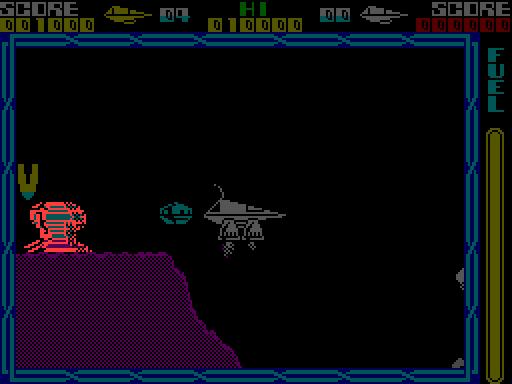
Stopped at $DEB3: the ground objects, drawn first only when the landscape moves up -- 320 pixels changed.
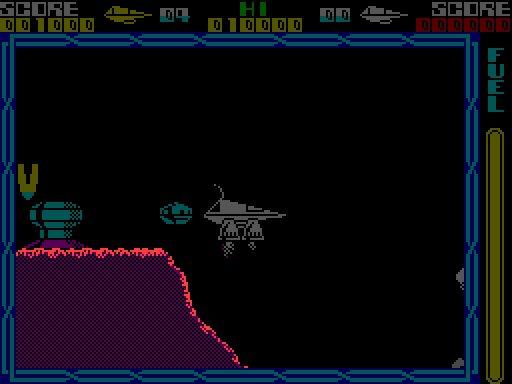
Stopped at $DEB6: draw_landscape -- 260 pixels changed.

Stopped at $DEC4: the ground objects, the beams and the stars -- 0 pixels changed.
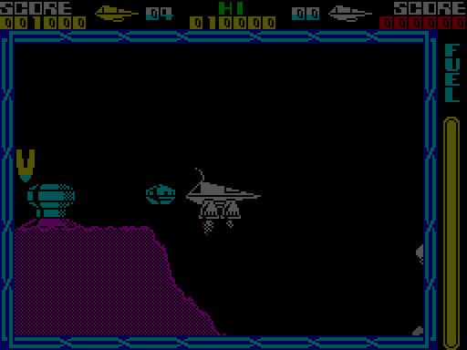
Stopped at $F46F: draw_ship: the ship, its trail and its jets -- 0 pixels changed.
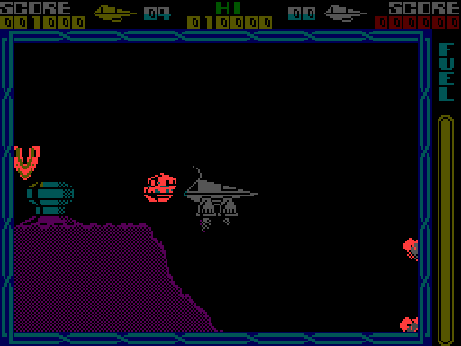
Stopped at $F478: the fuel gauge, the spawner and the nine sky objects -- 315 pixels changed.
draw_landscape changed 260 of the play area's 35840 pixels: the landscape is redrawn every pass, but almost all of it exactly as it was.
The same pass again, but with the play area cleared to black at $DEB3, just before draw_landscape is called, and the simulator stopped at the start of each piece ($D15C), after each step a blitter drew (after_step_drawn) and when each piece was finished ($D80A). What is left is exactly what the renderer writes in a pass: the steps along the surface and the strips the scroll uncovered -- and none of the inside of the hill, which is only ever painted by those strips as it comes into view.
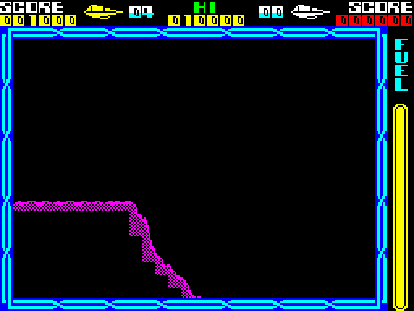
What one pass of draw_landscape writes on a cleared play area.
The same pass on the screen as the game had it.
The pieces in the order drawn, read from each tile's record as $D15C reached it (a mirrored tile's directions are turned round later, by piece_ends):
| Piece | Cell | Tile | x | y | Direction (as stored) | Steps | Steps drawn (piece_steps_done) |
|---|---|---|---|---|---|---|---|
| 1 | the view's cell | $37 | $58 | $97 | 0 (flat floor) | 6 | 3 |
| 2 | the view's cell | $37 | $48 | $B7 | 3 (steep, climbing right) | 2 | 2 |
| 3 | the cell below | $36 | $08 | $57 | 2 (45 degrees, climbing right) | 8 | 3 |
| 4 | the cell below and right | $33 | $A8 | $B7 | 3 (steep, climbing right) | 4 | 0 |
| 5 | the cell below and right | $33 | $C8 | $77 | 2 (45 degrees, climbing right) | 4 | 0 |
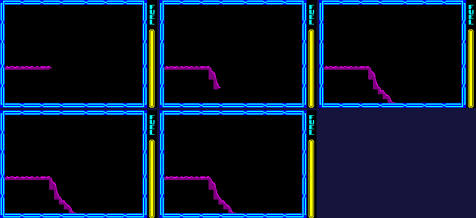
The play area after each piece in turn. A piece with no step on the view draws no step, though a step exactly on an edge is still counted, and the fill behind it can paint.
Piece 3, step by step: each picture is the screen after after_step_drawn counted another step, magnified three times, with the screen's byte boundaries in blue and what the pieces before it drew dimmed. Each step is one run of a blitter, and the next starts where the last left HL.
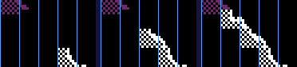
Piece 3's 3 drawn steps.
Every blitter is entered with A = the step's row pairs, HL = its screen address less its byte advance and SP = its graphic, and ends JP after_step_drawn with HL where the next step starts. Each row pair is POP, write, sideways, write; up a line; POP, write back the other way; up a line with the character-row fix-up.
| Blitter | Width | Used for | T-states a row pair (counted) |
|---|---|---|---|
| blit_flat_step | 3 | flat floor and ceiling at every shift | about 170 |
| blit_one | 1 | slopes 2, 3, 9, 10 at shift 0; wall 14 | about 75 |
| blit_two | 2 | slope 1/8 at shift 0; one-byte slopes shifted; wall shifted | about 105 |
| blit_three | 3 | slope 1/8 shifted | about 125 |
| blit_mirror_one | 1 | 5, 6, 12, 13 at shift 0; wall 15 | |
| blit_mirror_two | 2 | 4/11 at shift 0; 5, 6, 12, 13 shifted; wall 15 shifted | about 150 |
| blit_mirror_three | 3 | 4/11 shifted |
Clipping at the sides is done by patching jump displacements, never by testing bytes. flat_step_clip resets the flat blitter's three patchable JRs and patches them by the step's start column, sending the loop to cut paths (flat_blit_left_edge, flat_blit_left_two, flat_blit_one_column) that still POP the bytes they do not write, so SP stays in step. A sloped step goes through a JR at the end of draw_step whose displacement picks its own blitter or one of four clipping blitters (blit_right_clip, blit_mirrored_right_clip, blit_left_clip, blit_mirrored_left_clip). Rows below line $B7 are popped away and rows above $18 dropped from the count before the dispatch; a piece wholly outside the view is skipped by its box, and a step exactly on an edge goes to column_clipped or edge_column, which count it without drawing.
The scroll moves 2 pixels at a time, so origin_x AND 7 is 0, 2, 4 or 6 and draw_landscape picks one of the four tables. Below, the terrace scene flown right a pass at a time: the first pass seen at each fine position, each cropped to follow piece 3 (so each crop shows the same piece of the world), magnified three times, with the screen's byte boundaries in blue. The picture is the same; what changes is where the bytes fall, and so which pre-shifted graphic and which blitter draw it.
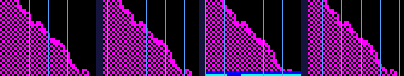
The same slope at fine scroll 0, 2, 4 and 6.
| Fine scroll | Table used | The piece's screen x | x within its byte |
|---|---|---|---|
| 0 | piece_blitters_shift0 | $C0 | 0 |
| 2 | piece_blitters_shift2 | $C2 | 2 |
| 4 | piece_blitters_shift4 | $C4 | 4 |
| 6 | piece_blitters_shift6 | $BE | 6 |
Nothing clears the play area. The sky is black and the inside of the ground is the checker $55/$AA, and both are unchanged by a move of 2 pixels across or 2 rows up or down: that is why every scroll step is 2 pixels (or 4, two steps at once). Only the strips a moving edge uncovers are painted, at the end of each piece:
Because only the edges repair what lies behind them, the play area has to start in a known state, and the fly-in is what gets it there.
colour_piece colours a column of attribute cells per step (one to three cells wide), only inside the play area. The colour is the planet's: the first of its pair above map row 12, the second from row 12 down -- the caverns. planet_ground_colours holds the five planets' pairs, copied by start_landscape and chosen by set_landscape_colours; read from the game:
| Planet | Surface | Caverns |
|---|---|---|
| 1 | bright magenta | yellow |
| 2 | bright green | bright yellow |
| 3 | bright white | bright magenta |
| 4 | bright yellow | bright white |
| 5 | bright cyan | bright green |
Every fourth pass save_restart_point saves the view's place as the next life's start, but only at a safe place: the bottom pixel row of the play area all checker (over flat ground), or all four cells sky or cloud. At a life's start start_landscape puts the view one map row below that place, fills the play area with the checker if the place was over ground, and with map_rebuild at $FF lets the view rise 4 lines a pass, the moving edges' fills painting the landscape in; fly_in_step ends it when the ship's place on the screen is clear, or after 40 passes. Below, the life after a death in the terrace scene (the tank emptied there in the simulator), stopped at each pass of the fly-in ($DD72): 41 passes, ending at map column $11, row $09, the last safe place the game had saved.
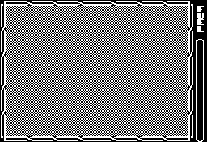
The fly-in, a pass a frame, drawn without the attributes: the play area is black on black until its last pass colours it.
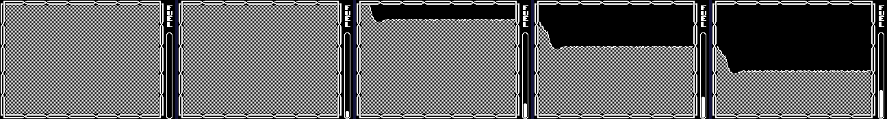
The first pass, a quarter, half and three-quarters of the way through, and the first pass of play.
Measured in the simulator over the 310 passes of the flight to the terrace scene, from $DEB3 to $DEB6: draw_landscape took 7,686 to 84,004 T-states a pass, 35,137 on average -- 50 per cent of a television frame. A whole flat step is about 400 T-states to blit (counted from the instruction timings), less than the deciding done for it in landscape_step_loop and flat_step_clip.